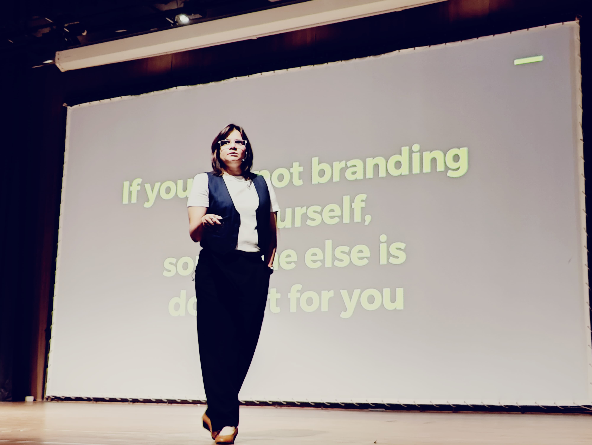

Ideas on marketing, visibility, and the work behind lasting brands.
Sharp field notes for founders, professionals, and teams building clearer stories and stronger market presence.
Blog
Latest essays and field notes
A growing library of sharp marketing observations, personal brand reflections,
and practical stories from rooms where strategy has to become action.
Personal brand building
Why talent without visibility is invisible
A strong personal brand is not about becoming loud. It is about becoming clear. When people can understand
what you stand for, what you solve, and why your work matters, trust starts forming before the first meeting.
Start with three anchors: your credibility, your point of view, and your proof. Then show up consistently
in places where opportunity already looks for people like you: LinkedIn, interviews, introductions,
industry rooms, and the conversations your future clients or employers already trust.
Nidhi's journal entries
The myth of "figuring it out fast"
The pressure to decide quickly often makes people borrow goals that were never theirs. Real clarity is slower,
but it is also more useful.
The work begins by asking better questions: What are you already good at? Where do people already
trust you? What story are you accidentally telling right now? What story would help people understand you better?
Marketing mastery
GTM lessons from everyday markets
A few years ago, a brand reached out to brainstorm a GTM strategy for a highly fragmented consumer market.
It was a useful reminder that great market lessons are not only found in global brands and polished case studies.
Everyday markets often reveal the fundamentals clearly: regional customisation, accessible pricing,
disciplined distribution, and a loyal customer base built through repeat trust.
It is also experiential marketing at its finest: the assembly, the crunch, the burst of flavour, and the
word-of-mouth that has travelled through generations. If a humble street food can capture a nation, imagine
what a sharp GTM strategy can do for your product.

Marketing mastery
Sales is a game of support
Seven years in hardcore sales taught Nidhi one undeniable truth: sales is all about supporting your customer to the T.
Not fancy decks. Not 100 features. Not aggressive follow-ups.
Every buyer has one question running through their mind: "Will I be fine?" If they do not believe you will
make their life easier, they will not buy. Buyers today are drowning in options, and the real separator is trust.
Be proactive. Map your solution to the actual problem. Clearly show why you are better or different. Set
boundaries, but show up when it matters. Make it easy to say yes by simplifying pricing, approvals, and
unnecessary steps. Sales is not pushing. It is guiding.
Personal brand building
Personal branding is not optional anymore
People make decisions about you before they meet you. The only question is whether those decisions are based
on a clear signal or a scattered one.
A practical brand does not need a performance. It needs alignment between your expertise, your language,
your platforms, and your proof. That is where opportunities begin to compound.